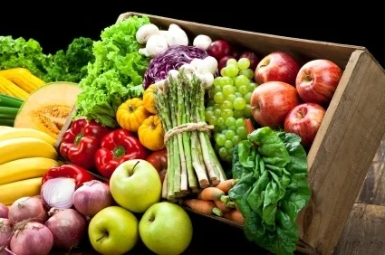

The Importance of Healthy Eating
-Your guide to a healthier lifestyle
What is Healthy Eating?
Healthy eating means consuming a variety of foods that provide essential nutrients to maintain your health, feel good, and have energy.

Benefits of Healthy Eating
- Boosts your immune system
- Enhances mental well-being
- Promotes healthy weight
- Reduces the risk of chronic diseases

Tips for Healthy Eating
- Include plenty of fruits and vegetables in your meals.
- Choose whole grains over refined grains.
- Stay hydrated by drinking plenty of water.
- Limit added sugars and saturated fats.
